快速入门
本文档旨在指导用户快速配置 RTL87x2G 的开发环境，包括编译 SDK，烧录固件，升级固件及抓取 Log。用户可以下载 SDK 中的测试文件，确保 EVB 可以正常工作，并与开发环境兼容且具备相应功能。
概述
RTL87x2G SDK 支持 Windows 和 Linux 系统，用户可以通过 Keil/GCC 来编译SDK中的工程，使用 MP Tool 将文件烧录到 EVB 中，然后通过 Debug Analyzer 来抓取 SoC 端的日志，硬件接线配置及对应 PC 机软体架构可以参考 EVB 工作原理图。

EVB 工作原理图
准备 EVB
EVB 评估板提供了用户开发的 硬件环境，用于开发和应用调试设计。它由一块母板和一块子板组成，用户需要准备两条 USB 数据线连接 EVB 和 PC 机，EVB 的外围接口接线请参考 EVB 接口分布图，更多信息请查阅 评估板指南。

硬件环境
准备文件
EVB 正常工作需要烧录以下文件。
基础文件：包括了 RTL87x2G 所需固件和配置设置文件。
应用文件：包括了目标工程的具体代码和功能实现。
以下是 RTL87x2G 正常运行需要的 默认烧录文件，其中 Bank0 APP Config File 为可选烧录文件，文件说明可以参考 编译和下载 章节。
文件 |
Realtek 提供 |
文件类别 |
文件烧录选项 |
|---|---|---|---|
System Config File |
X（通过 MP Tool 生成） |
基础文件 |
√ |
Bank0 Boot Patch Image |
√ |
基础文件 |
√ |
Bank1 Boot Patch Image |
√ |
基础文件 |
√ |
Bank0 OTA Header File |
X（通过 MP Tool 生成） |
基础文件 |
√ |
Bank0 System Patch Image |
√ |
基础文件 |
√ |
Bank0 BT Stack Patch Image |
√ |
基础文件 |
√ |
Bank0 BT Host Image |
√ |
基础文件 |
√ |
Bank0 APP Image |
X（工程编译生成） |
应用文件 |
√ |
Bank0 APP Config File |
X（通过 MP Tool 生成） |
基础文件 |
非必选 |
软件工具
用户在开发 RTL87x2G SDK 的过程中，需要使用到 Realtek 的 开发工具包及 ARM/GCC 开发套件，具体如下。
工具 |
链接/路径 |
版本 |
OS |
|---|---|---|---|
ARM Keil MDK |
uVision: V5.36 ARMCC: V6.17 |
Win10 |
|
GNU Toolchain |
13.2.Rel1(或更新) |
Windows/Linux |
|
MinGW |
V3.82.90(或更新) |
Windows |
|
MP Tool |
|
Win10 |
|
MPCLI Tool |
|
Windows/Linux/MAC OS |
|
MP Pack Tool |
|
Win10 |
|
PACKCLI Tool |
|
Windows/Linux/MAC OS |
|
Debug Analyzer |
|
Win10 |
备注
路径下的安装包均为
.zip格式，需要用户自行解压缩。MPCLI Tool 为 MP Tool 的跨平台版本，PACKCLI 是 MP Pack Tool 的跨平台版本，如果用户不是基于 Windows 系统进行开发，可以使用跨平台版本的工具。
ARM Keil MDK
用户可以通过 Keil Microcontroller Development Kit(MDK) 编译 SDK 中的应用，更多信息请查阅 Keil MDK 章节。
GNU Toolchain
用户可以通过 GNU Toolchain 编译 SDK 中的应用，开发前请先安装 gcc-arm-none-eabi，更多信息请查阅 GCC 章节 。
MinGW
用户可以使用 MinGW 来解析 Makefile 。
MP Tool/MPCLI Tool
用户可以通过 MP Tool/MPCLI Tool 来烧录文件，MPCLI Tool 是 MP Tool 的跨平台版本。MP Tool 有 量产 和 调试 两种烧录模式，量产烧录模式适用于大规模生产，本文主要描述调试烧录模式，适用于开发者在软件开发的前期阶段的，更多信息请参考 MP Tool 。
MP Pack Tool/PACKCLI Tool
用户可以通过 MP Pack Tool 来打包文件，适用于 OTA （空中升级）和量产烧录，PACKCLI Tool 是 MP Pack Tool 的跨平台版本，更多信息请参考 MP Pack Tool。
Debug Analyzer
用户可以通过 Debug Analyzer 进行 Log 验证，更多信息请参考 Debug Analyzer Tool 。
启动 EVB
为确保 EVB 可以正常使用，用户可以按照以下步骤进行烧录测试：
双击运行 MPTool.exe，具体操作步骤和文件路径请参考 MP Tool 章节。
在 Load Layout 处点击 ..，加载
flash_map.ini文件。点击 Browse 加载所有 烧录文件。
点击 Detect 成功识别 EVB 的 COM 口。
点击 Open 成功打开 COM 口。
勾选 Erase All for Download，点击 Download 进行烧录，进度条显示当前烧录进度。
进度条显示 OK 表示文件烧录成功。
程序烧录完成后，让 EVB 进入 工作模式。
{kind=link}
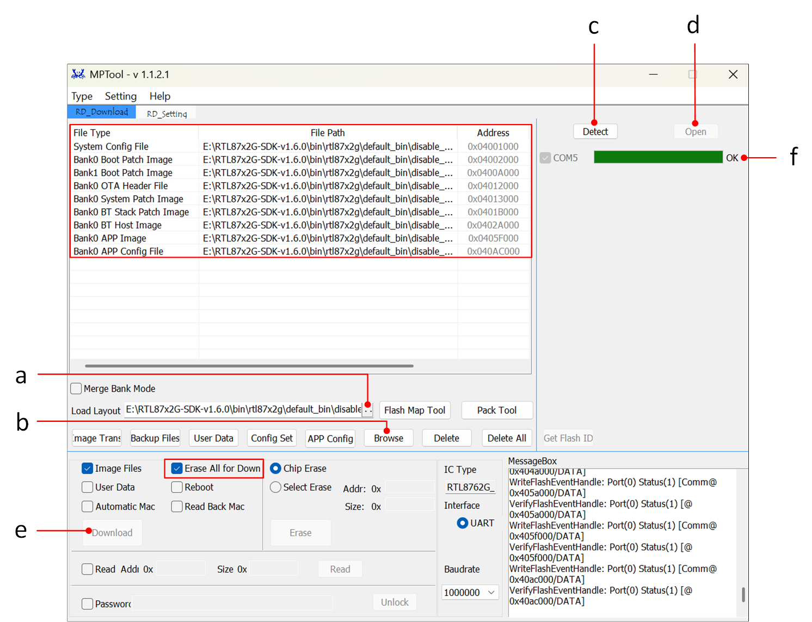
MP Tool 烧录界面
备注
请将 SDK、Tool 等资料存放在不含空格的非中文路径下。
在下载时勾选 Erase All for Download，会先将 Flash 进行全擦，然后再开始烧写，如果没有勾选，烧录时只根据需要下载的文件进行擦除。
硬件开发环境
EVB 提供了用户开发和应用调试的 硬件环境，它由主板和子板组成。EVB 有 下载模式 和 工作模式，用户需要使用不同的接线方法来设置正确的模式。
EVB 接口和模块

EVB 接口分布图

EVB 模块分布图
供电
CON1 和 CON2 的 USB 接口均需要与电脑连接给 EVB 供电。

EVB 供电接线
SWD 接线
RTL87x2G |
SWD |
|---|---|
GND |
GND |
SWDIO |
SWIO |
SWDCLK |
SWCK |
VDDIO |
Vterf/3.3V |
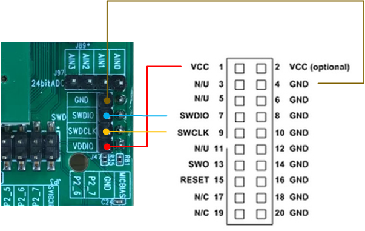
SWD 接线
UART
{kind=link}
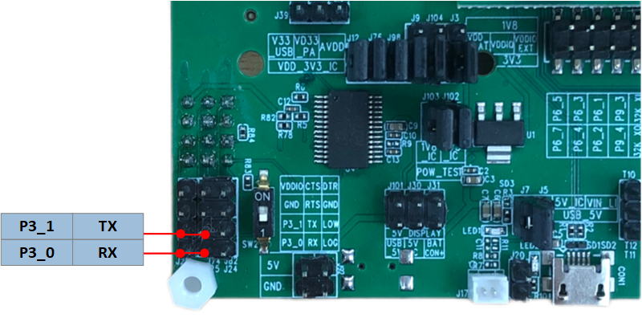
UART 接口
Reset

Reset 按键
LOG 接线
在 EVB 的正反面各有一个拨码开关，将两个开关均拨至 “1” 端，RX和LOG用跳线帽相接，连接完成后可以通过 Log 验证 是否符合预期。

LOG 接线
下载模式
给 EVB 上电前，用户需要先将 LOG Pin(P0_3)接地，有以下两种方法：
方法一：在 EVB 的正反面各有一个拨码开关，任意一个拨至 “ON”，即表示 LOG 接地。
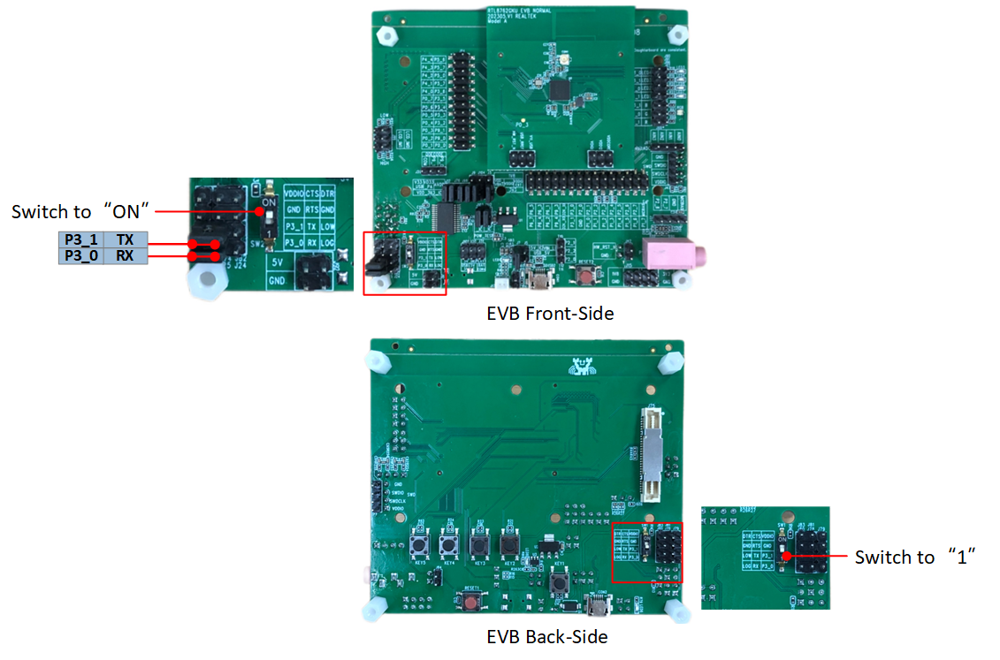
LOG 接地方法一
方法二：在 EVB 的正反面各有一个拨码开关，将开关均拨至 “1”，连接 LOG 和 GND。

LOG 接地方法二
EVB 进入下载模式后，可以通过 MP Tool 进行程序烧录。
备注
使用方法一，程序烧录完成后，EVB 进入工作模式，需要将两个拨码开关均拨至 “1”。
使用方法二，程序烧录完成后，EVB 进入工作模式，需要断开 LOG 和 GND 之间的连线。
芯片在上电后会读取 LOG Pin 的电平信号，电平为低，则 Bypass Flash 进入下载模式，否则进入工作模式，运行应用层程序。
工作模式
EVB 正常工作需要将正反面的拨码开关均拨至 “1”，断开 LOG 和 GND。
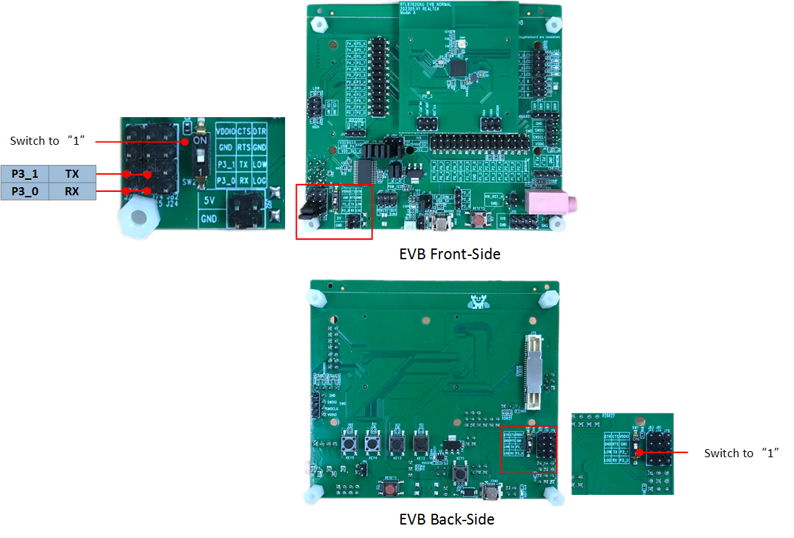
工作模式
编译和下载
以下是 RTL87x2G 的烧录文件说明：
序号 |
文件名称 |
说明 |
|---|---|---|
1 |
System Config File |
用于记录 IC 硬件配置和蓝牙配置等信息，例如：配置 BT 地址，修改 Link 数目等，参数设置项的具体含义可以参考 MP Tool 的相关介绍。 |
2 |
Boot Patch Image |
包含 Bank0 Boot Patch Image 和 Bank1 Boot Patch Image 两份文件，ROM code 中保留了 Patch 函数入口，通过 Patch 可以优化 Boot flow、修改 secure ROM code 原有行为、扩充 ROM code 功能等。 |
3 |
Bank0 OTA Header File |
定义 Flash Bank layout 的文件。 |
4 |
Bank0 System Patch Image |
ROM code 中保留了 Patch 函数入口，通过 Patch 可以修改 non-secure ROM code 原有行为、扩充 ROM code 功能等。 |
5 |
Bank0 BT Stack Patch Image |
BT Controller中stack 相关 feature 的支持。 |
6 |
Bank0 BT Host Image |
实现了 BLE Upperstack。 |
7 |
Bank0 APP Image |
开发者开发的 BLE 应用程序，由 Keil/GCC 工程编译生成，并经过 fromelf 等工具处理。 |
8 |
Bank0 APP Config File |
用于记录 App 配置等信息，例如：配置 GAP Config 信息等，参数设置项的具体含义可以参考 MP Tool 的相关介绍。 |
备注
Boot Patch Image、System Patch Image、BT Host Image、BT Stack Patch Image 由 Realtek 直接提供。用户可以通过 Anchor（Realtek 文件释放系统）下载上述资料，如果没有 Anchor 账号，请向 Agent/PM/FAE 申请注册，或者可以登录 RealMCU 直接下载。
生成 Flash Map
使用 MP Tool，点击 Flash Map Tool，界面会跳转到 Flash Map Generate Tool，点击 Confirm 可生成 flash_map.ini，同步还会生成一份 flash_map.h 文件。
如果没有参数需要修改，可以跳过此章节，直接加载SDK中的 默认文件 。

flash_map.ini
备注
烧录文件前需要先加载
flash_map.ini文件，flash_map.ini即为生成的 flash layout，可以理解为是各部分在 Flash 中的地址分配。在 Flash Map Generate Tool 界面，点击下拉 Flash Size 选项，用户可以根据 Flash 的实际使用情况，选择合适的 Flash Size。
用户可以根据实际需求，自行修改Flash Layout，点击 Layout Init，调整各区域大小，确认后点击 Confirm，更多详细信息请参考 Memory。
根据 Flash 布局排布的不同，分成两种 OTA 方案：支持 Bank 切换 和 不支持 Bank 切换，用户根据实际情况点击 Support OTA Switch 进行选择，默认选择 Disable，更多详细信息请参考 OTA。
{kind=link}
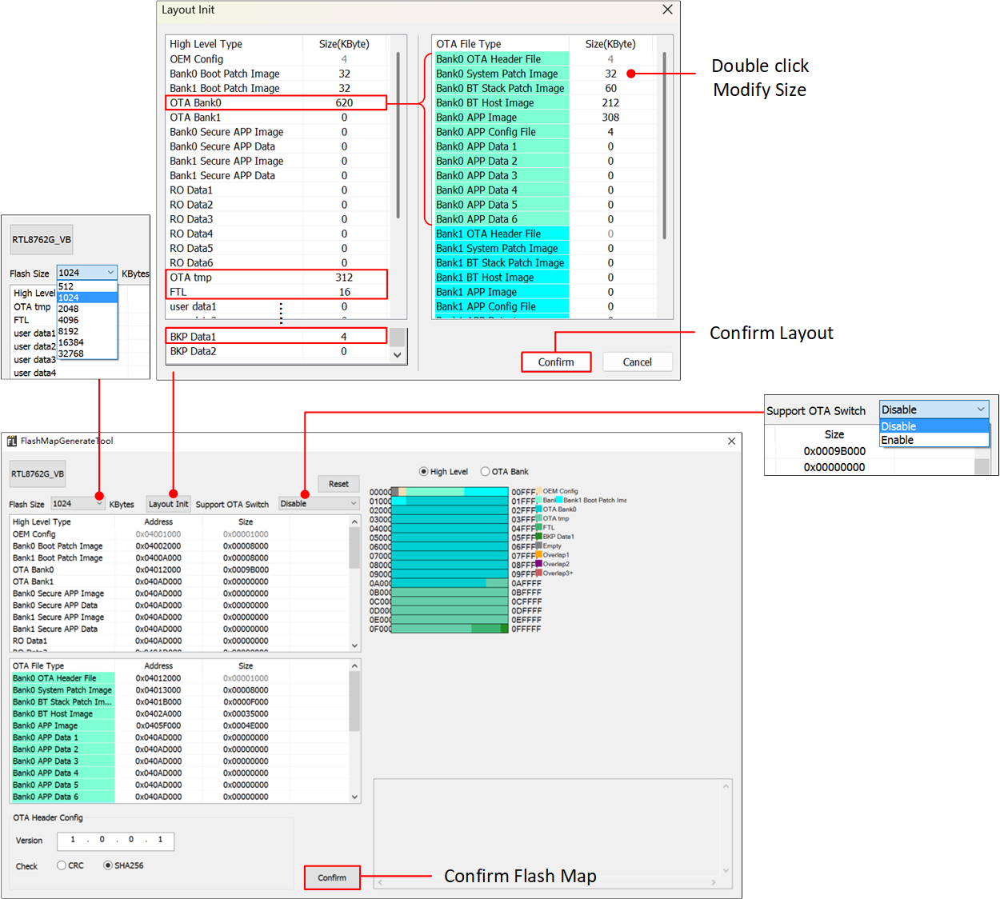
Flash Map Generate Tool
备注

flash_map.h
生成 OTA Header
使用 MP Tool，点击 Flash Map Tool，界面会跳转到 Flash Map Generate Tool，点击 Confirm，生成 flash_map.ini 的同时也会同步生成 OTA Header File。BootLoader 会按照此文件读取各 Image 的布局分布。
如果没有参数需要修改，可以跳过此章节，直接加载 SDK 中的 默认文件。

OTA Header File
备注
如果 Flash Layout 有被修改，OTA Header File 也会同步更新，请注意 flash_map.ini 和 OTA Header File 的一致性。
生成 System Config File
使用 MP Tool，点击 Config Set，在 Config Setting 界面调整相关参数，点击 Confirm 后会直接生成 System Config File 并加载到对应区域。对于初次使用的开发者，Config Setting 界面的参数设置建议保持默认配置，更多参数设置可以参考 MP Tool。
如果没有参数需要修改，可以跳过此章节，直接加载 SDK 中的 烧录文件。
{kind=link}
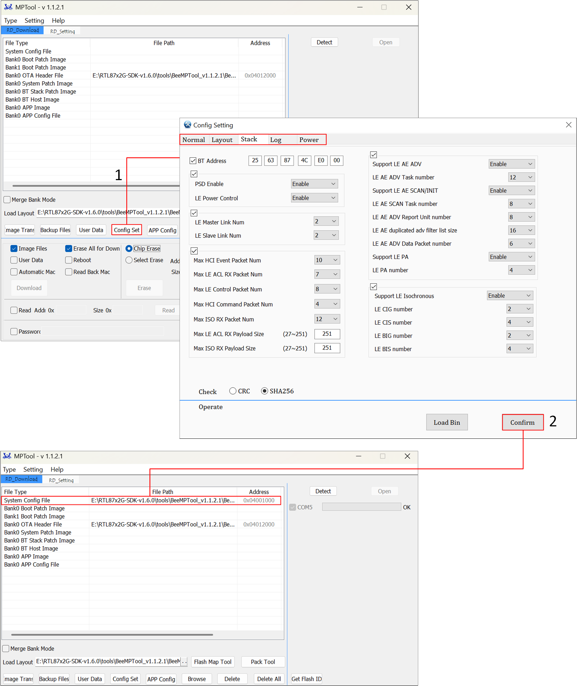
System Config File
备注
如果 Flash Layout 有被修改，需要重新生成 System Config File。
编译 APP Image
SDK 中所有的应用都能够通过 Keil Microcontroller Development Kit(MDK)/GCC 编译以及使用。在进行软件开发之前，需要先安装 Keil 或 GCC 编译环境。为了方便快速建立开发工程，用户可以拷贝或直接打开现有的示例工程，在此基础上增加功能代码。
Keil MDK
Keil MDK 是一套完整的软件开发环境，适用于多种基于 Arm Cortex-M 的微控制器设备。MDK 包括了 µVision 集成开发环境和调试器、Arm C/C++ 编译器，以及必要的中间件组件。
SDK 中所有的应用能够通过 Keil Microcontroller Development Kit(MDK) 编译以及使用。所以在进行软件开发之前，要先取得并安装 Keil。有关 Keil 的更多信息请访问 www.keil.com。
Realtek 使用的工具链版本信息如图所示。为避免产生 ROM 可执行程序和应用之间的兼容性问题，建议使用 uVision V5.36 版本或者更新的版本，并将 ARMCLANG 默认编译器配置成 compiler 6.17。

Keil 版本信息
{kind=link}
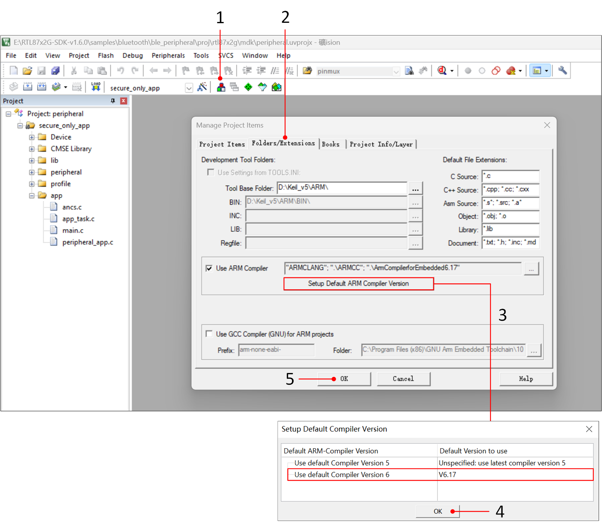
Keil 编译器版本配置
以 ble_peripheral 工程为例，编译成功后会在工程的 bin 文件夹下生成带 MD5 校验的 .bin 文件和对应的 .trace 文件，其中 .trace 文件用于解析 SoC 端 Log。

编译 ble_peripheral 工程

工程编译生成文件
备注
MP Tool 采用 MD5 作为烧录文件的校验值，并要求将 MD5 值加入到待烧录文件的文件名后缀中，所以烧录的是带 “MP” 前缀的 APP Image。
Keil 工程默认关闭生成 app.disasm 反汇编文件。如果用户调试需要打开此项功能，可以修改 after_build_script.bat 文件。
//将注释符号"::"删除
::%keil_compiler_include_floder%\..\bin\fromelf.exe -acd --interleave=source -o "bin\%linker_output_file_name%.disasm" "%full_name_path%"
备注
--interleave=source 标志会将源代码与反汇编代码交错排列，有助于将源代码与反汇编代码相关联，但文件会包含用户源代码，因此请保护其机密性。
GCC
编译 GCC 工程，需要对 GNU Toolchain 和 MinGW 进行正确的环境变量配置，以 D 盘为安装根路径为例，添加如下路径到环境变量。
D:\GCC\MinGW\bin;
D:\GCC\MinGW\include;
D:\GCC\MinGW\lib;
D:\GCC\gcc-arm-none-eabi-10-2020-q4-major-win32\gcc-arm-none-eabi-10-2020-q4-major\bin;
以 ble_peripheral 为例，在工程所在的 gcc 目录下运行 cmd 指令，输入指令 mingw32-make，GCC 工程编译成功后会在工程的 bin 文件夹下生成带 MD5 校验的 .bin 文件。

GCC 工程编译

GCC 下的 AppImage 文件路径
GCC 工程默认关闭生成 app.dis 反汇编文件。如果用户调试需要打开此项功能，可以修改 Makefile 文件。
# 将注释符号"#"删除
#$(OD) -D -S build/$(TARGET).elf > bin/$(TARGET).dis
备注
-S 标志会将源代码与反汇编代码交错排列，有助于将源代码与反汇编代码相关联，但文件会包含用户源代码，因此请保护其机密性。
文件下载
MP Tool
设置 EVB 进入下载模式，然后用户可以通过 MP Tool 给设备烧录程序，软件版本不低于 V1.1.0.x。
双击运行
MPTool.exe。
{kind=link}
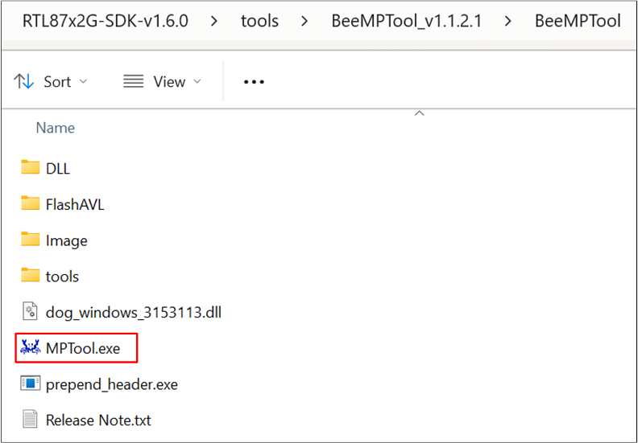
MPTool.exe
【芯片类型】选择：RTL8762G_VB。

MP Tool 芯片选型
【类型】选择：调试。
{kind=link}
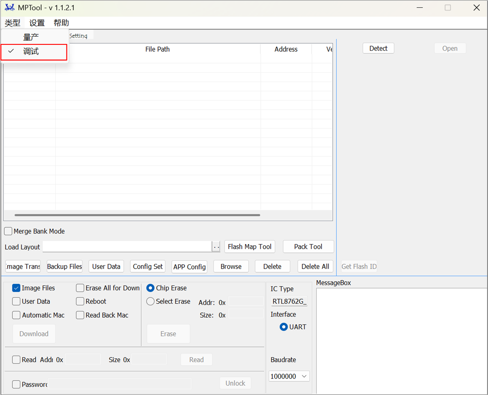
MP Tool 模式选择
在 MP Tool 烧录界面 的 Load Layout 处点击 .. 按钮，加载
flash_map.ini文件。点击 Browse，加载所有烧录文件，文件类型和加载路径如下表所示。
RTL87x2G 烧录文件和路径 文件类型
文件名
文件路径
System Config File
configFile_xxx.binRTL87x2G-SDK-Vx.x.x\\bin\\rtl87x2g\\default_bin\\disable_bank_switch\\trustzone_disable\\commonBank0 Boot Patch Image
BANK0_boot_patch_MP_release_xxx.binRTL87x2G-SDK-Vx.x.x\\bin\\rtl87x2g\\default_bin\\disable_bank_switch\\trustzone_disable\\commonBank1 Boot Patch Image
BANK1_boot_patch_MP_release_xxx.binRTL87x2G-SDK-Vx.x.x\\bin\\rtl87x2g\\default_bin\\disable_bank_switch\\trustzone_disable\\commonBank0 OTA Header File
OTAHeader_Bank0_xxx.binRTL87x2G-SDK-Vx.x.x\\bin\\rtl87x2g\\default_bin\\disable_bank_switch\\trustzone_disable\\common\\bank0Bank0 System Patch Image
sys_patch_MP_release_xxx.binRTL87x2G-SDK-Vx.x.x\\bin\\rtl87x2g\\default_bin\\disable_bank_switch\\trustzone_disable\\common\\bank0Bank0 BT Stack Patch Image
bt_stack_patch_MP_master_xxx.binRTL87x2G-SDK-Vx.x.x\\bin\\rtl87x2g\\default_bin\\disable_bank_switch\\trustzone_disable\\common\\bank0Bank0 BT Host Image
bt_host_MP_xxx.binRTL87x2G-SDK-Vx.x.x\\bin\\rtl87x2g\\default_bin\\disable_bank_switch\\trustzone_disable\\common\\bank0Bank0 APP Image
app_MP_sdk_xxx.binRTL87x2G-SDK-Vx.x.x\\bin\\rtl87x2g\\default_bin\\disable_bank_switch\\trustzone_disable\\common\\bank0\\ble_peripheralBank0 APP Config File
appConfigFile_xxx.binRTL87x2G-SDK-Vx.x.x\\bin\\rtl87x2g\\default_bin\\disable_bank_switch\\trustzone_disable\\common\\bank0点击 Detect，界面会显示识别到的设备 COM 口。
- 点击 Open，如果 COM 口可以正常打开，进度条右侧会显示 OK，否则显示 Fail。如果显示 Fail，用户可以参照常见错误逐一排查，检查无误后重复步骤，点击 。
常见错误如下
检查串口 Tx/Rx 是否接反
检查设备 P0_3 即 LOG Pin 接地再上电
检查串口转接板是否支持 1M 波特率
检查 COM 被占用
串口打开成功，点击 Download，COM 口右侧进度条显示当前程序下载进度。
Download 完成后会显示 OK。
如果显示 Fail，按下 EVB 上的 Reset 按键或给 EVB 重新上电后重复上述步骤。
备注
MP Tool 支持两种烧录模式：
量产模式：用于产线生产
调试模式：用于开发人员开发调试时使用
MP Tool 可烧录单个或者多个文件，如果只是烧录单个文件，比如 Bank0 APP Image，不要勾选 Erase All for Download。
J-Link 下载
J-Link 是由 SEGGER 公司开发的一种仿真器/调试器。它是一款专门针对 Arm 处理器的工具，可用于开发、调试和测试嵌入式设备的固件。J-Link 具有高速且可靠的仿真性能，支持实时调试和快速下载固件，可以帮助开发人员加快调试和验证嵌入式系统的过程，提高开发效率和质量。
J-Link 支持多种连接接口，如 JTAG、SWD 等，因为 SWD 使用的接线更少，所以 RTL87x2G 采用这种接口。另外，J-Link 也可以与多种开发环境和 IDE（如 Keil MDK、IAR Embedded Workbench 等）兼容，请正确设置 Keil 环境。
建议使用 J-Link Software v6.44（或更新）版本，更多信息请参考 SWD 调试。
SWD 接线 完成后用户可以通过 J-Link 来烧录 app image，请确保其余文件已通过 MP Tool 完成烧录。使用 J-Link 烧录前，先将 SDK 目录下的 Flash 算法复制到 KEIL 安装目录下的如图路径位置，复制完成后请参照以下界面准确设置相关参数。
{kind=link}
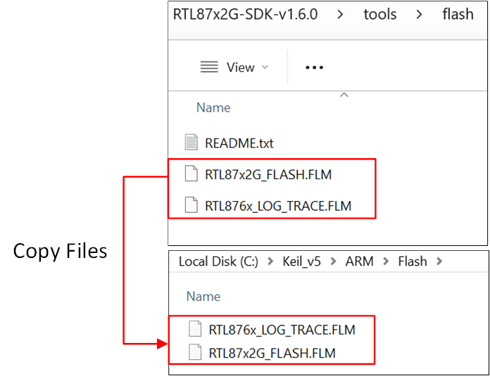
Copy File Path
{kind=link}
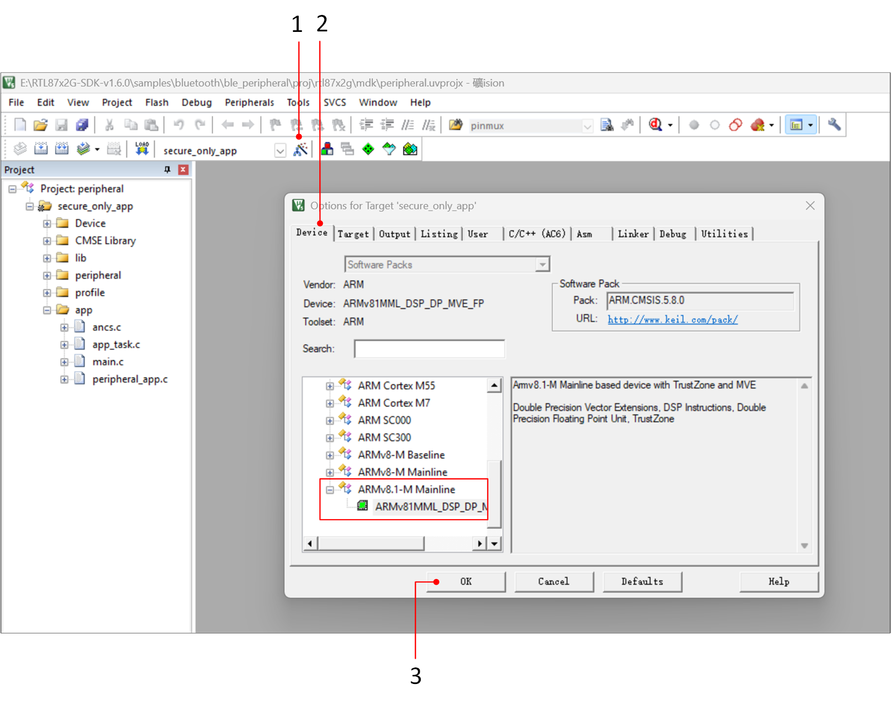
KEIL 界面配置-1
{kind=link}
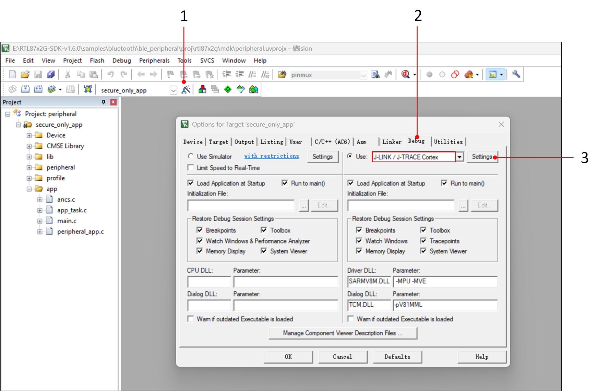
KEIL 界面配置-2

KEIL 界面配置-3

KEIL 界面配置-4
备注
系统在 DLPS 模式下无法进行 J-Link 调试，建议用户在使用 J-Link 调试程序时先关闭 DLPS 模式，更多信息请参考文档 低功耗模式。
使用 J-Link 调试需要确保 SWDIO(P1_0) 和 SWDCLK(P1_1) 这两个引脚没有在程序中被复用。
示例验证
手机 App 验证
以 ble_peripheral 工程为例，确认 EVB 接口 接线正确，让 EVB 进入 下载模式 ，加载 SDK 中的 默认文件，烧录完成让 EVB 进入 工作模式。
用户可以通过手机蓝牙 APP 搜索 BLE 广播，广播名称默认是 BLE_PERIPHERAL，点击 Connect，手机与设备成功连接后，会在手机端显示对端设备的 Service。

设备广播
{kind=link}
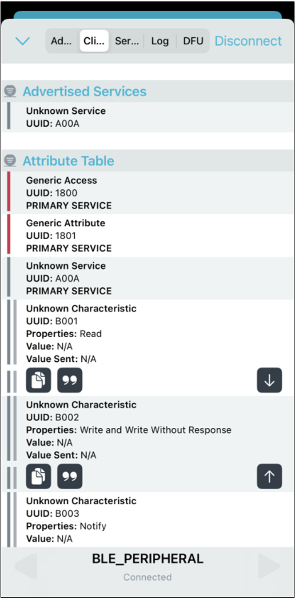
手机连接广播成功
Log 验证
用户可以通过 Debug Aanlyzer 抓取 SoC 端 Log 确认程序是否正确运行，请正确完成 LOG 接线。
{kind=link}
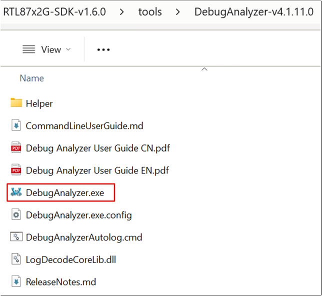
DebugAnalyzer.exe
双击运行 DebugAnalyzer.exe，点击 Setting，Baud rate 默认是 2M，在 App Trace File 处加载对应工程的 .trace 文件，最后点击 Confirm 确认设置。

Debug Analyzer 参数设置界面
选择正确的 Serial Port，点击 Start，Debug Aanlyzer 开始工作，PC 会将抓取的原始数据（Raw Data）保存在 .bin 文件中，并根据用户设置的 .trace 文件，将原始数据解析为明文 Log，保存在 .log 中。
以 ble_peripheral 工程为例，EVB 板上电后，如果有 GAP adv start 的 Log，代表设备开始广播。点击手机蓝牙 APP 界面的 Connect，Log 打印 GAP adv stoped:because connection created，代表手机与设备连接成功。

ADV Start

Connection Create
{kind=link}
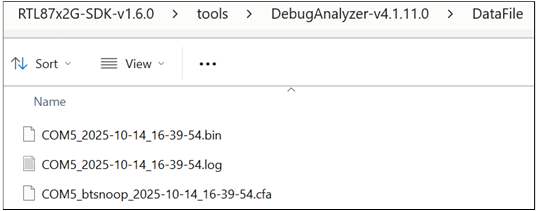
Log Data File
备注
Log 文件默认保存路径如上图所示：
DebugAnalyzer.exe同目录下的 DataFile 文件夹。.trace文件是用于解析串口接收到的二进制 Log 流，工程每次编译完成后都会生成新的.trace文件，需要确保.trace文件与当前 SoC 运行代码匹配。开发过程中如遇到问题，请提供上图 DataFile 文件夹 路径下的
.log.bin.cfa文件以及.trace文件，以便 Realtek 解析定位问题。